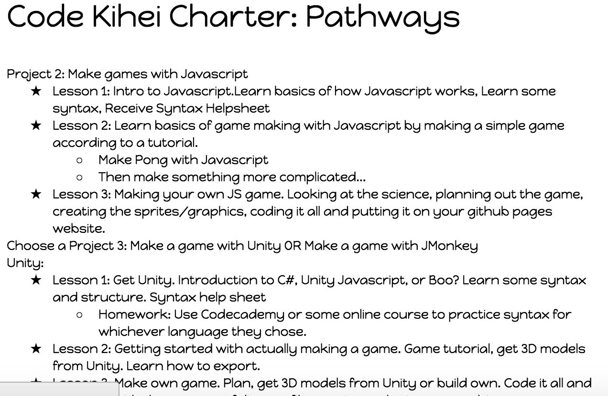
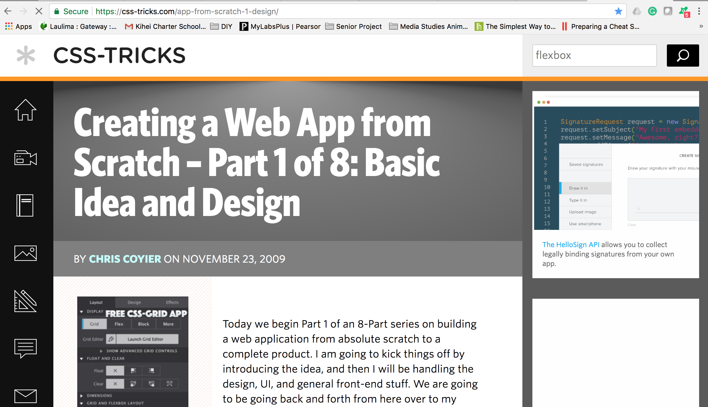
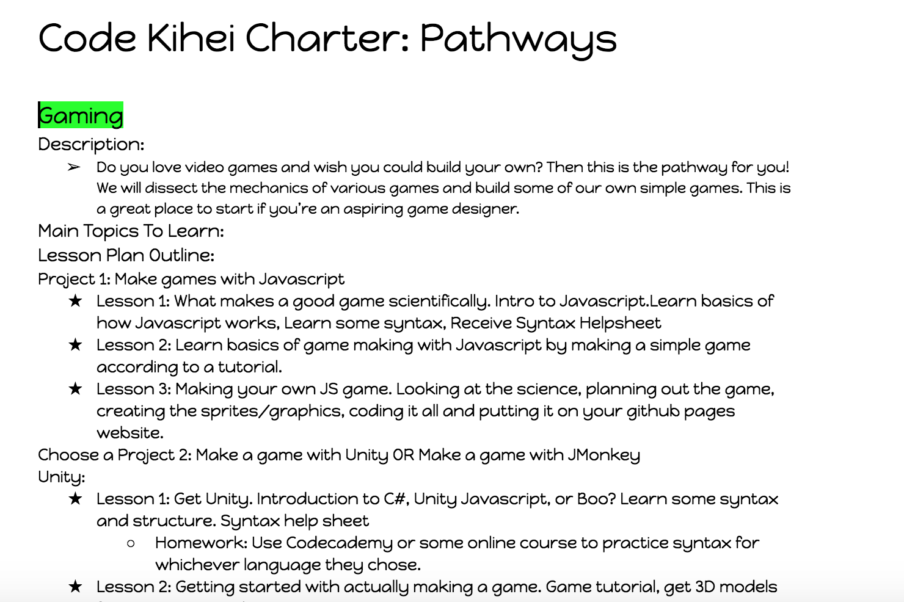
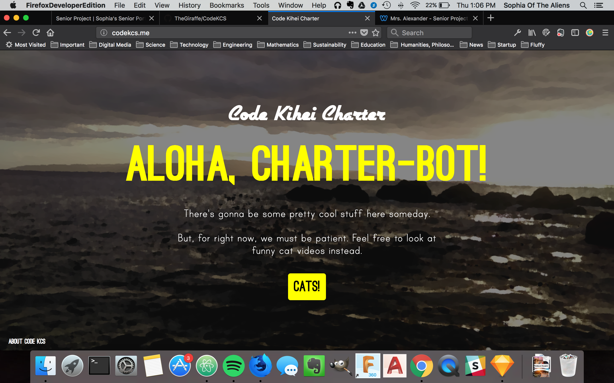
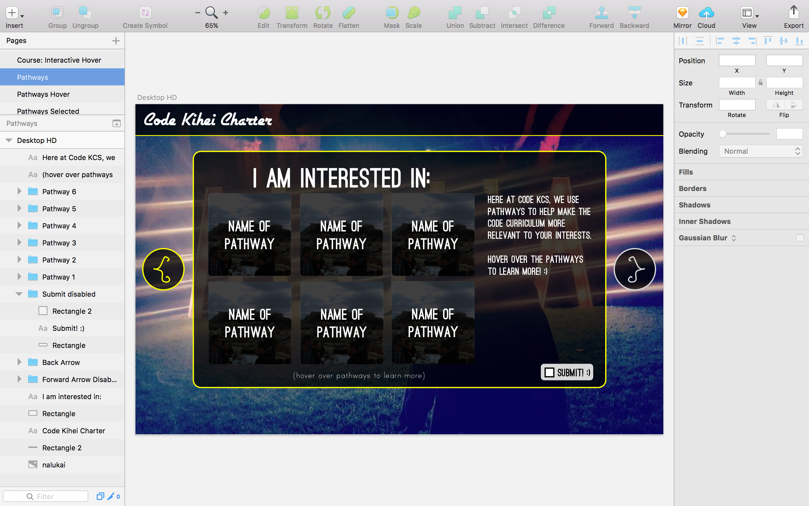
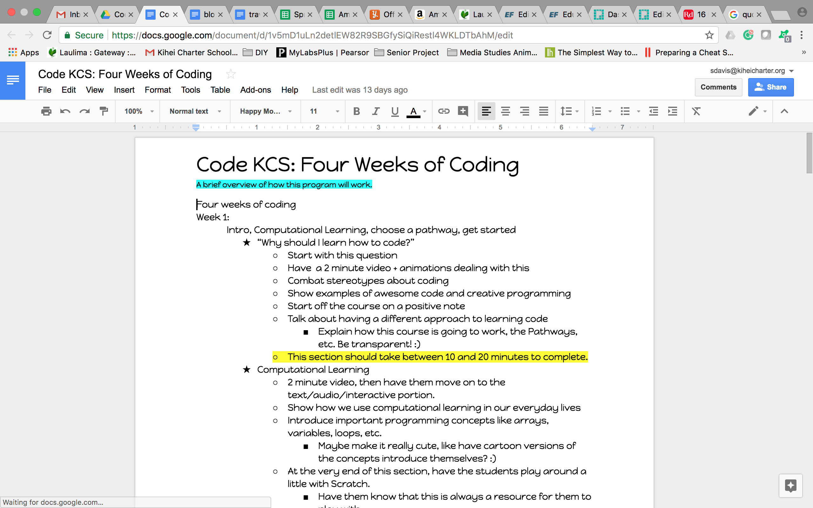
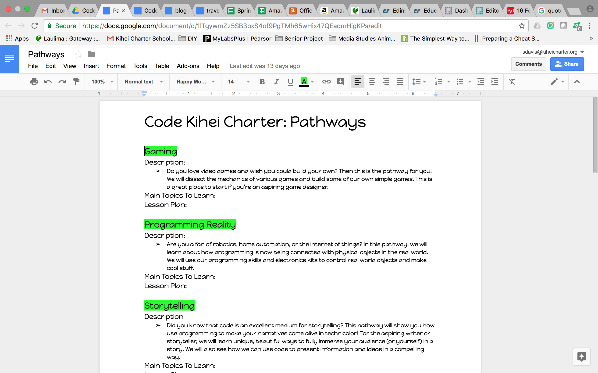
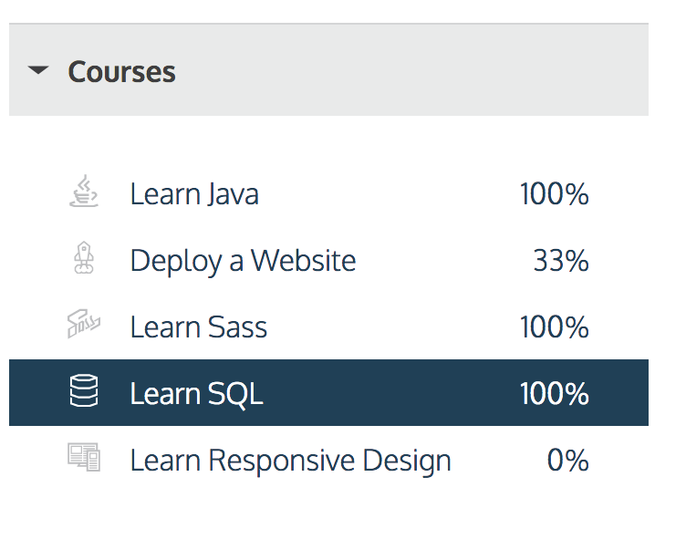

Going more in depth in designing the lesson plans. Shifted focus from web app to curriculum workflow.
Working on webapp tutorial. Got behind this week because of Running Start finals.
Working on finishing basic curriculum outlines for all pathways (week of Tuesday 12/5).
Driving Question: How can I teach coding to students at Kihei Charter in an interesting and interactive way?
Timeline:
Week of Tuesday 12/5-Finished basic curriculum outlines for all pathways
Week of Tuesday 12/12-Will have gotten through at least STEP 3 of the Creating a Web App from Scratch guide with my own web app. Basically, all the databases should be set up by now.
Week of Tuesday 12/19-Will have gotten through at least STEP 6 of the Creating a Web App from Scratch guide with my own web app. Basically, AJAX Interactivity added to webapp.
Week of Tuesday 12/26-Will have gotten through the entire Creating a Web App from Scratch guide. Should have a basic (non precious) prototype of the web app that I can beautify, add curriculum + media to, and modify.
I would like to have a meeting with Mrs. Alexander about my project progression sometime during the week of December 5th, as I have important things to update her on (such as the tentative dates for the class I’m teaching). I would hope to meet with her on December 5th during class, however before class or on December 7th would definitely also be doable.
Here's the link to the ideas and general curriculum for the program.
    Thus far in my research, I learned a lot about the negative effects of coding stereotypes on students. One of the most pressing examples that I hadn’t considered right now was the effect of the male programmer stereotype on young girls who are interested in programming. One study showed that both male and female children associated males with programming and said that boys are naturally better at programming, despite that not necessarily being the case in their own classroom. This study, as well as others, illustrated that stereotypes about programming can start as young as first grade. Apart from gender stereotypes, many young people have picked up stereotypes about computer programmers being antisocial and bad communicators, which adds to the established negative feelings many students already have towards code. Finally, in my research, I looked into computational learning and how to measure that in students. Basically, this means measuring how well students have picked up the ‘programming mentality’. One of the best ways to measure this is by taking a look at the variation of data structures used by students when they code (either using Scratch or a different language). More variation and creativity with code shows true understanding, while seeing the same things over again either indicate copy/pasting or a not quite deep understanding. Such things, of course, aren’t black and white. When it comes to grading code, I have decided that I’m better off grading qualitatively, factoring in what I know about the student, rather than just trying to crunch quantitative data.
Sources:
http://blogs.edweek.org/edweek/curriculum/2017/05/gender_stereotypes_coding_ability_start_young_1st_grade.html
https://medium.com/@WordcorpGlobal/programming-doesnt-require-talent-or-even-passion-11422270e1e4
https://www.linkedin.com/pulse/you-think-computer-programmers-poor-communicators-may-warshaw
http://fortune.com/2015/07/28/2-billion-under-20/
https://www.forbes.com/sites/georgeanders/2015/07/29/liberal-arts-degree-tech/#72ffe8ad745d
http://scratched.gse.harvard.edu/ct/files/AERA2012.pdf
All of these sources are related to programming education and what it’s like to be a programmer in the real world. I would say that they’re all fairly reliable because every single one of them comes from a source that is well known for credibility. If there was an error or a bias, the authors would be more likely to add a correction. The least reliable of them is perhaps the Medium article, however I was referring to it more as a blog/real life experience article rather than a source for hard data.
Driving Question: How can I teach coding to students at Kihei Charter in an interesting and interactive way?
Goals: